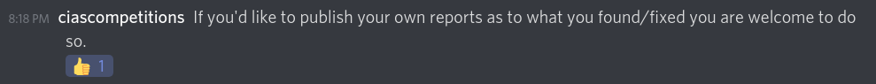
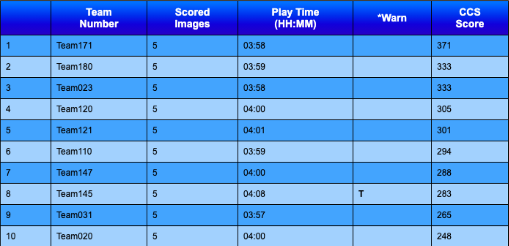
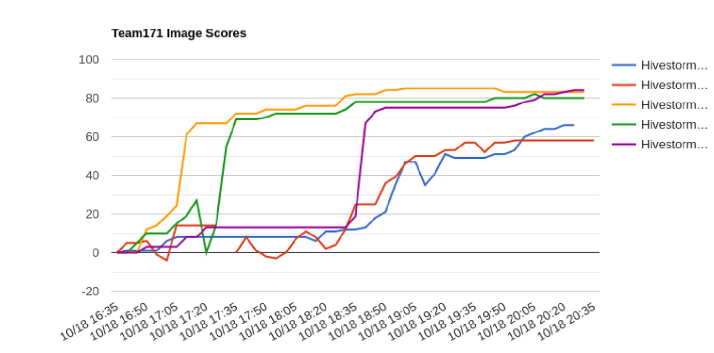

Hivestorm Writeup
Hivestorm is a collegiate-focused cyber defense competition. Teams compete by securing provided Windows and Linux based virtual machines – removing malware and other infections, correcting misconfigurations, mitigating vulnerabilities, disabling vulnerable services, and so on. Teams accumulate points for addressing each scored issue and must race against the clock to accumulate as many points as they can before time expires.

I was team captain of team171, DefSec Deadbeats for Hivestorm 2020. Here’s the scoreboard from the end of the competition:

Huge thank you to UTSA’s CIAS and their team members for running this competition! And of course thank you to my teammates for the cybering and four hours of harassment over Discord, and to the incredibly talented friends I’ve made over the past few years, like Altoid, Paradox, and Anub1s.
We got permission to post writeups online, so here we are. We won’t be posting ScoringReportScreenshots.zip, but will go into our methodology and a lot of the vulns you might’ve seen. Hopefully this helps someone out. Our goal isn’t necessarily to help someone beat us, but to help teams with no idea what to explore next gain a foothold.
Categories
It really helps to have a rough classification of vulnerability categories. These are basically worthless on their own, but very helpful for finding new things to explore. Here are the ones I go by:
- Forensic Questions
- These are the only guaranteed vulns (other than README requests) in the entire competition. So, they’re very valuable. However, you need to make sure you don’t spend too much time on them– low hanging fruit is worth much more in the end, and small things add up.
- Users
- Adding valid/README users
- Removing invalid/hidden/evil users
- Changing passwords
- Fixing groups
- Fixing URA for Windows
- User configurations
- On Linux, this is probably
PAMconfigurations - On Windows, this is making sure accounts aren’t locked out, expired, have a password that never expires, etc
- On Linux, this is probably
- Random fixes / Misc
- These are things that don’t really fit in any other category, for example, fixing
/etc/shadowperms or removing a user shell for a system user. - There are very few of these that are predictable. IMO the best way is to check important configuration files manually and to make sure you know what is normal, and spend a little bit of time at least manually looking through the filesystem
- These are things that don’t really fit in any other category, for example, fixing
- Standard Configurations
- This is where you find the majority of your points
- Linux will be with
sysctl.conf,login.defs,lightdm.conf, whatever other system configuration files are pertinent - Windows will be random garbage in Local Security Policy
secpol.msc- Hivestorm images aren’t (yet) connected to a domain, so Active Directory hardening is kind of out of scope
- Magic Configurations
- In the realm of the kernel mailing list participants and the GPO MVP Wizards, we sometimes find a really niche vulnerability that is just kind of bs. These are rare and should be celebrated.
- Updates
- If you don’t update/install everything in the ReadMe, you’re throwing away points. In the trash
- @Nightbane recommends https://patchmypc.com/home-updater for Windows
- Run updates and make sure they actually work (apt isn’t backdoored, apt sources are fixed, no package holds…)
- Windows Update is literally the worst thing that’s ever happened to me
- Try WSUS if it’s a local VM! If not, just start them after you run out of ideas and pray that your machine is usable within one or two epochs
- If you don’t update/install everything in the ReadMe, you’re throwing away points. In the trash
- Standard mitigations
- Enabled the firewall
- Enable Windows Defender
- Software
- Installing good software
- Starting good services
- Removing bad software/features
- Stopping/removing bad services
- Backdoors
- Backdoors are bad! Especially on images of this difficulty, if you don’t find any backdoors on your image, you’re probably missing one
- Could be a trojaned binary, fake binary (ex. copied netcat to something else), SetUID binary, etc
- Check listening ports (
ss -plunt) andfind / -perm -4000(SUID/SGID) for Linux
- Check listening ports (
- Service Hardening
- Do you have a critical service? Do you have points for that service’s configuration being improved or hardened? No? You’re probably missing points!
- This is often low-hanging fruit that’s not too hard to configure (ex. Look up
php hardening guide)
It’s also worth understanding what’s in the realm of scoring and possibility. If it’s merely a recommended setting and doesn’t actually have any merit on real security (ex. move /var/ to its own partition, or changing /etc/shadow to 000 from 640), it’s a safe bet that it’s not really worth exploring, at least for getting points. After a bit you should be able to smell what is worthless when reading guides online.
Upgrading your operating system is always a bad idea in this competition (that is, upgrading to a new version, ex. Ubuntu 16.04 to Ubuntu 20.04). Don’t do that. Read the README.
Time
You only have four hours. That’s not very much time! You can’t automate users (thanks to whoever made the ReadMe a picture lol), but you should try to automate everything else. Scripts are a great idea. What’s not a great idea is ripping things off the internet that you don’t understand. I’d say even if you don’t know what you’re doing, it’s worth making your own script to learn bash|powershell.exe.
Our gameplan for this competition was:
- Make fun of people complaining at @ciascompetitions in the Discord
- Listen to anime OSTs && Get points
If we put a bit more time into it, we would’ve come up with
- Pregame by making fun of people in the Discord
- Forensic Questions for about an hour
- Run scripts
- Manually do things that the script didn’t cover or didn’t do correctly
- Manually scrounge and check obscure things and bad files
Scripting
I can practically smell y’all looking at the graphs and being like “LULW carried by a Windows script, look at that point jump, their Linux isn’t even that good,” and yeah that’s mostly true. I would like to point to our lack of time spent on the Linux boxes (only about half the comp, and on and off at that) and to a bunch of mistakes (pls don’t look at the resets and negative points on Ubuntu), but whatever, you live and you learn.
Here’s our graph for reference:

So, for Windows scripts, let me ask all the click jockeys out there, do you enjoy launching secpol.msc and clicking all the buttons to make the screen say what it says on your checklist? If you do, I’d recommend a career in Java GUI development or Nessus pentesting. For others, once you know what one thing should be in Group Policy or the Local Security Policy, you can just put it in a script!
I suppose I’m hypocritical because I didn’t know you could do this for a long time, but you can actually just import a configured GPO that sets a lot of stuff for you (see the DoD STIG GPOs, and the Microsoft Security Compliance Toolkit). Worth looking into for any aspiring M$ experts.
Linux scripts are cool, but they’re pretty hard to write and there’s a lot more thought required on behalf of the operator. Still worth writing one unless using a pager makes you really happy.
If you need more sauce/juice for either of these, you can always look at the DoD STIGs and the CIS benchmarks.
Keep in mind to always adhere to the rules of the competition you’re competing in. If you happen to be a high school or middle school CyberPatriot competitor reading this, using scripts you’ve written at Nationals is prohibited (at least at the time of writing), so you can’t just become a scriptbot and mail it in. I suppose you could just be a braindead script slinger for Hivestorm, but it’s not a good idea. And for both comps, diversifying your toolkit with free and open source tools is a good idea.
Ok, the Vulns
Let’s take a look at some of the actual vulns for the images.
Debian 9
Forensic Question 3 correctNot too much to say for these. The actual forensic questions for Debian 9 were really tough, we only got #3 before moving on. That one was a simple “what’s the netcat backdoor”, which you can find by looking at ss -plunt and seeing which listening ports are irregular (and trying to connect to it with netcat to see what it actually is). I believe that port was 5102 as some binary called at-spi2-core, which was of course actually netcat-traditional. Once you find it and get points, make sure to remove it. :p
Note: If you put your answer in the Forensic Question file, and it says it’s not right, and you didn’t mess with the file or the scoring engine… the engine is right. Try other stuff.
As for the other FQs, it’s hard to take advice from someone who didn’t solve them, but I would say spend a lot of time doing CTFs in general, because often Hivestorm FQs are very similar to common challenges (ex. What’s the hidden message?).
Removed unauthorized user minaros
Removed hidden user amurty
User jmiller is not an administratorAudit the users. Not too much to say here either. The users in the ReadMe are the only users that should be on the system, and if they’re in the ReadMe and not on the system, then add them. “Hidden” users are typically those with UIDs (User IDs) of under 1000. Alas, I am unaffected because my method of editing users is vim /etc/passwd.
A minimum password length is required
Extra dictionary based password strength checks enabledThese are the standard /etc/pam.d/common-auth and /etc/pam.d/common-password configurations.
Insecure permissions on shadow file fixed
Firewall protection has been enabledHey look! Misc things! Side note: don’t let everyone read your password hashes.
IPv4 TCP SYN cookies have been enabled
Ignore bogus ICMP errors enabled
Logging of martian packets enabledSometimes when you copy and paste enough things from the internet into your /etc/sysctl.conf, you get points.
IRC daemon has been disabled or removed
Minetest service has been disabled or removedThere are probably a lot of bad/extraneous/redundant/unauthorized services running. For example, haha funny meme run minecraft on the VM, but actually, remove it.
Apache has been updated
PHP has been updatedFree points! Yay! apt update && apt full-upgrade You need to also make sure your /etc/apt/sources.list and all the other lists and configs in /etc/apt are configured correctly, and that everything you need in the ReadMe is installed (for all boxes).
Prohibited software Nmap removed
Prohibited software john the ripper removed
Removed netcat backdoorThis is the bad package land. In the ReadMe, it says no hacking tools or games, so… remove them. If they left the apt log or Ubuntu Software Center history on the image, read through that real good. Otherwise just look through every package installed haha.
Firefox warns when sites try to install add-ons
SSH root login has been disabled
PHP does not display errors
Apache server tokens set to least
Apache trace requests disabledHere’s where the aforementioned service hardening vulns live. SSH PermitRootLogin is a classic. Since this was a LAMP stack, you also need to worry about hardening Apache2 (/etc/apache2/apache2.conf and related files) and PHP (/etc/apache2/whatever/php.ini). I’ll also consider Firefox a service… I guess. If we managed our time better, we would’ve also worked on hardening Dovecot/Exim4/Roundcube.
Ubuntu 16.04
Starting from the top…
Forensic Question 1 correct
Forensic Question 3 correctIf you answer the forensic questions and ask nicely, the scoring engine might bestow some points upon you. The first FQ was finding a file in a pcap (install Wireshark and just export the file), the second FQ was a uuencoded 7zip file (we didn’t actually solve this one in time lol, forgot about it until the last 5 mins), and the third I forgot.
Removed unauthorized user mkoh
Removed unauthorized user leelee
Removed hidden user cortazar
User jmiller is not an administrator
User avolovodov is not an administratorRemove bad users! Make sure admins are actually admins!
Disabled password login for user bin
User nagata has a minimum password age
A default maximum password age is set
An account lockout policy is configured
Greeter does not enumerate user accountsHere are some interesting ones, there’s a misc one (remove login shell for system users), and a very jank one (passwd or chage or manually edit /etc/shadow to set a password expiration), then standard configurations for PAM and lightdm.conf.
Ignore broadcast ICMP echo request enabled
IPv4 accept ICMP redirects disabledClassic sysctl.conf points, praise up.
FTP service has been disabled or removed
POP3 service has been disabled or removed
SMTP service has been disabled or removedDon’t be tripped up by which boxes have which critical services. Debian 9 had POP3 as a critical service, but this one definitely did not.
Sudo has been updated
Nginx has been updated
PHP has been updated
LibreOffice has been updated
Thunderbird has been updated
Prohibited software ophcrack removed:pray: We rejoice today, for we have been blessed by the lörds of apt.
PHP does not display errorsPHP is part of a critical service –> php.ini is points.
Windows 10
Welcome to Windows!
Forensic Question 1 correct
Forensic Question 2 correct
Forensic Question 3 correctThese FQs were fairly standard, there was one tough one about finding the username for a deleted user. Stack Overflow the rescue, there was an obscure registry path that contained user information per SID, and happened to include the home path (and thus username).
Removed unauthorized user gabriel
Removed unauthorized user strickland
A sufficient password history is being kept
A secure account lockout duration existsFor Windows, the equivalent of Linux’s PAM is the Local Security Policy settings for Passwords and Accounts.
Limit local use of blank passwords to console only [enabled]
Digitally encrypt or sign secure channel data (always) [enabled]Here we have the juicy and ever-so-verbose Local Security Policy Security Options.
Firewall protection has been enabled
Antivirus protection has been enabledWindows is really nice for these type of vulns, because there’s usually some big red flashing button (for wf.msc and Defender at least) where all you need to do is click it.
Windows Update service is enabled
Simple TCP/IP Services has been stopped and disabledService management. Good ones on, bad ones off.
Firefox automatically checks for updates
Thunderbird has been updated
Krita has been updatedMake sure to read the ReadMe and do the things they say. Also, going through the Firefox settings is a good idea.
Removed prohibited MP3 files
Removed Home Web Server
Removed WebDiscover browser
Removed Actual KeyloggerLook for standalone binaries, features, media files, and installed programs that shouldn’t be there.
Internet Explorer 8+ SmartScreen Filter [enabled]
Firefox pop-up blocker enabledOther misc security features: turn smartscreen on, make sure Firefox doesn’t let the popups overwhelm poor Debby in HR.
Windows 2019
Forensic Question 1 correct
Forensic Question 3 correctForensic Question 1 for 2019 was about finding a banned user in the MediaWiki instance. A quick lookup would show that you can navigate to the BlockList and related pages manually pretty easily, because Dwayne knows I can’t read anything with those stylesheets. Forensic Question 2 was really tough and we didn’t get it, asking the competitor which DLL was run by svchost.exe for the TaskManager service. Apparently it wasn’t the one right after it as an argument or the bunch on Process Explorer, so idk. Question 3 was finding which port a program was listening on, which is easy with Sysinternals TcpView, netstat, or the Task Manager.
Guest account is not enabled
Removed unauthorized user dharari
Removed unauthorized user leelee
A secure maximum password age exists
A secure minimum password age exists
A secure account lockout observation window existsUser management and secpol!
Audit Logoff [Success]There are also some auditing settings in the Local Security Policy / Group Policy. Auditing things is probably better than not.
Prevent users from installing printer drivers [enabled]
Restrict CD-ROM access to locally logged-on user only [enabled]
Microsoft network client: Digitally sign communications (always) [enabled]
Allow system to be shut down without having to log on [disabled]More treasures from our benevolent security policy.
File sharing disabled for C driveYou can view active SMB shares from fsmgmt.msc. Some should be there by default, the others… shouldn’t. Remove the bad shares, but also make sure to not remove the authorized work shares haha.
SNMP service has been stopped and disabled
Microsoft FTP service has stopped and disabledServices.
Adobe Reader DC has been updated
FileZilla Client has been updated
Visual Studio Code has been updated
Removed Plex Media Server
Removed AnyDesk
Removed CleanMyPC
Removed Nmap
Removed Tini backdoorUpdate the ReadMe programs and remove the bad programs like the good little sysadmin you are.
RDP connection encryption level has been set to high
Require secure RPC communicationRDP is a critical service, therefore hardening it is probably worthwhile. This is usually a combination of Group Policy and just standard menus you see normally.
Internet Explorer Enhanced Security Configuration is enabled
Firefox warns when sites try to install add-ons
Firefox display warning on known malware sites [all users]
IIS detailed errors disabledOther service/web browser hardening.
Windows 2016
We’ve discussed everything pretty much, so here’s just a list for 2016. Everything here should make sense hopefully and fall into a predefined category. If it doesn’t, quickly look up the vulnerability text and you should find some good articles or MS help posts.
Forensic Question 1 correct
Forensic Question 2 correct
Forensic Question 3 correct
Removed unauthorized user cortazar
Removed unauthorized user cwei
A secure minimum password length is required
A secure lockout threshold exists
Deny access to this computer from the network includes Guest
Recovery console: Allow automatic administrative logon [disabled]
Microsoft network server: Digitally sign communications (always) [enabled]
Do not allow anonymous enumeration of SAM accounts and shares [enabled]
SNMP Trap service has been stopped and disabled
Net.Tcp Port Sharing Service has been stopped and disabled
PeaZip has been updated
Removed Tetris
Removed Driver Booster
Removed netcat backdoor
SMB 1.x removed or disabled
Do not allow supported Plug and Play device redirection
Internet Properties: Enable Enhanced Protected Mode [Enabled]
Firefox displays warning on known malware sitesWrap up
And that’s it for our partial Hivestorm 2020 writeup. Thanks again to UTSA’s CIAS for running the competition. See you guys next time.